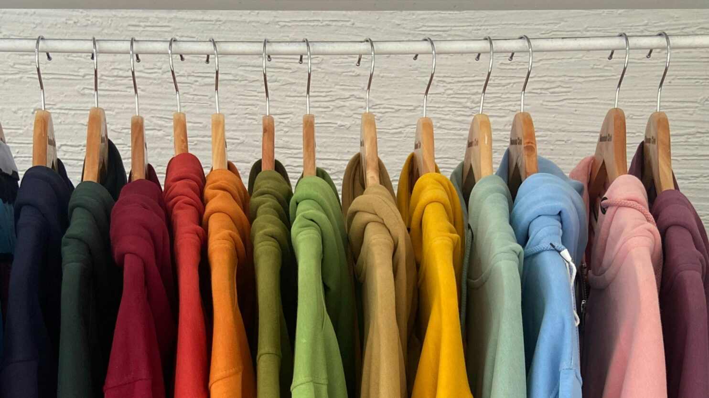

TOPITUPP
Declutter. Resell. Refresh.
At Topitupp by Salt, we help you transform your wardrobe by decluttering, reselling, and curating timeless pre-loved fashion.
Whether you need to free up space, make extra cash, or shop sustainable pieces, we’ve got you covered.
✔ Curated pre-loved pieces for every wardrobe
✔ Declutter & organize effortlessly
✔ Resell, donate, or refresh your closet
üìç DM to shop or collaborate!
üìû Contact Us: 08035242723
üìç Instagram: @topitupp.bysalt
✔ Curated pre-loved pieces for every wardrobe
✔ Declutter & organize effortlessly
✔ Resell, donate, or refresh your closet
üìç DM to shop or collaborate!
üìû Contact Us: 08035242723
üìç Instagram: @topitupp.bysalt

ABOUT US
Elegant. Timeless. Sustainable.
At Topitupp by Salt, we believe that fashion should be effortless and sustainable.
A cluttered wardrobe can be overwhelming, and that’s where we come in!
✔ Declutter & organize wardrobes for a fresh start.
✔ Resell stylish, high-quality outfits, shoes, and accessories.
✔ Shop from our curated selection of elegant, pre-loved fashion.
✔ Donate gently used clothing to those in need.
Fashion is a journey, and we’re here to make yours more intentional, stylish, and sustainable.
üìç Let‚Äôs Work Together
✔ Declutter & organize wardrobes for a fresh start.
✔ Resell stylish, high-quality outfits, shoes, and accessories.
✔ Shop from our curated selection of elegant, pre-loved fashion.
✔ Donate gently used clothing to those in need.
Fashion is a journey, and we’re here to make yours more intentional, stylish, and sustainable.
üìç Let‚Äôs Work Together

PORTFOLIO
Transforming Wardrobes, One Piece at a Time
See how we’ve helped clients reclaim their space, refresh their style, and give their fashion pieces a second life.
üõç Wardrobe Decluttering Projects ‚Äì Before & after transformations.
üíº Resale Success Stories ‚Äì Items sold & earnings made for clients.
❤️ Giving Back – Donations to charities & those in need.
üìç View More
üõç Wardrobe Decluttering Projects ‚Äì Before & after transformations.
üíº Resale Success Stories ‚Äì Items sold & earnings made for clients.
❤️ Giving Back – Donations to charities & those in need.
üìç View More

SERVICES
Wardrobe Decluttering & Organization
We help you sort, organize, and refresh your wardrobe—without the stress.
✔ Resale Assistance – Sell & Earn: Turn your fashion clutter into cash! We handle the reselling process for you.
✔ Shop Pre-Loved Fashion – Explore our collection of handpicked, pre-loved outfits, shoes, and accessories.
✔ Donation Coordination – Want to give back? We assist in donating stylish, gently used pieces to those in need.
üìç Book a Wardrobe Makeover | üõç Shop Now
✔ Resale Assistance – Sell & Earn: Turn your fashion clutter into cash! We handle the reselling process for you.
✔ Shop Pre-Loved Fashion – Explore our collection of handpicked, pre-loved outfits, shoes, and accessories.
✔ Donation Coordination – Want to give back? We assist in donating stylish, gently used pieces to those in need.
üìç Book a Wardrobe Makeover | üõç Shop Now
Shop Pre-Loved Fashion
✔ Elegant & timeless pieces
✔ Sustainable fashion choices
✔ Affordable, high-quality styles
üìç DM to shop or visit @topitupp.bysalt on Instagram!
✔ Sustainable fashion choices
✔ Affordable, high-quality styles
üìç DM to shop or visit @topitupp.bysalt on Instagram!
Contact Us
üì© Let‚Äôs Refresh Your Wardrobe!
üìû Contact Us: 08035242723
üìç Instagram: @topitupp.bysalt
üìû Contact Us: 08035242723
üìç Instagram: @topitupp.bysalt